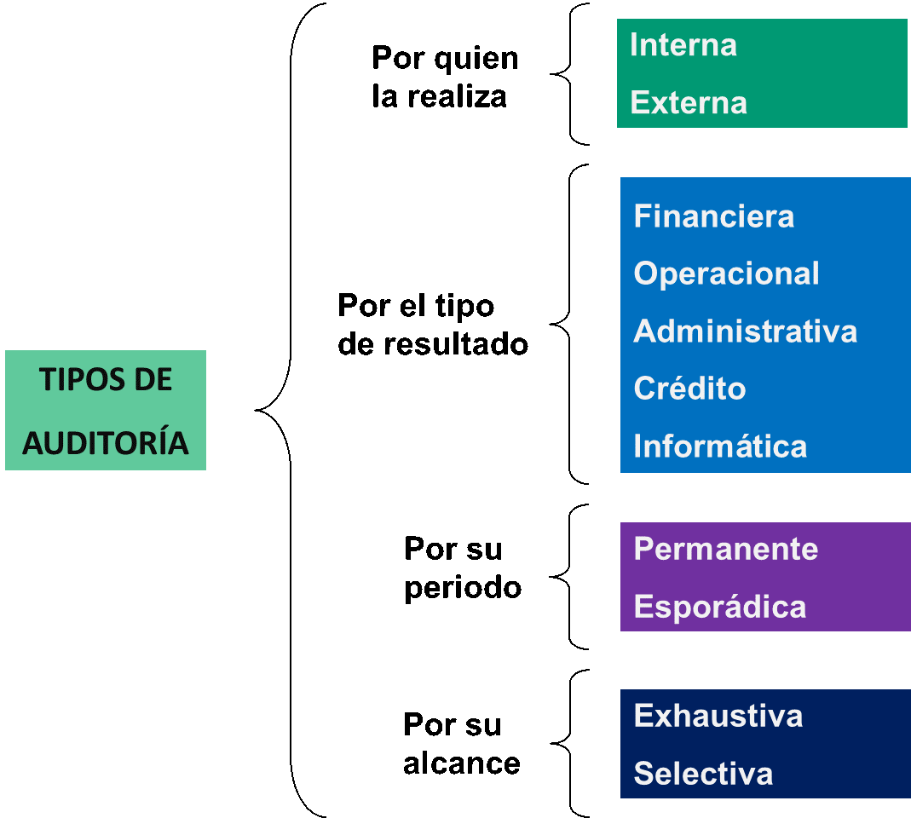

GENERALIDADES DE LA AUDIOTRÍA DE SISTEMAS
1er SEMANA
¿QUÉ SE ENTIENDE POR AUDITORIA?
Según José de Jesús Aguirre Bautista, “La Auditoría se refiere a la revisión practica que se realiza sobre los recursos informáticos con que cuenta una entidad con el fin de emitir un informe o dictamen sobre la situación en que se desarrollan y se utilizan esos recursos”.
IMPORTANCIA DE LA AUDITORÍA
Desde hace ya muchos años atrás la humanidad ha venido adaptándose popo a poco a los cambios tecnológicos y por ende al uso de la tecnología ya sea para guardar información, realizar cálculos matemáticos para resolver todo tipo de problemas en las organizaciones o entidades. Debido a ese cambio tecnológico derivado de la necesidad de solventar problemas también surgió la preocupación de optimizar todos los recursos tecnológicos con los que cuenta organización y garantizar su competitividad en el mercado. Es ahí donde entra en juego la Auditoría Informática para revisar cada y verificar que cada uno de los recursos estén optimizados y dar recomendaciones para fortalecer las debilidades que se puedan encontrar durante la revisión.
OBETIVOS DE LA AUDITORÍA
Muchos cuando escuchamos decir que se le hará una auditoría a la empresa donde laboramos, al área donde laboramos e incluso a la institución en la que estudiamos, creemos que es porque alguien hizo algo malo y que al ser auditado lo llevaran a la cárcel. Bueno podría pasar que nos lleven a cárcel si hacemos algo indebido. Pero, como leímos anterior mente la Auditoría es necesaria para garantizar en cierta manera que los procesos o recursos dentro de la Organización estén optimizados. Algunos de los objetivos de la Auditoría son los siguientes:
- Mejorar la situación de la empresa.
- Sugerir mejoras (en controles, procedimientos, etc.).
- Reunir elementos para la toma de decisiones.
- Reducir los riesgos.
- Retroalimentación oportunamente.
- Optimizar el uso de recursos.
- Analizar imparcialmente las funciones.
- Estandarizar.
CLASIFICACIÓN DE LA AUDITORIA
La Auditoria se puede clasificar de diversas maneras, ya sea por quien la realiza, por el tipo de resultado, por su periodo, por su alcance, entre otras. Lo más común es escuchar sobre auditoría Interna y externa, más adelante les estaré hablando un poco sobre estas dos últimas. Por lo pronto les comparto la siguiente imagen de los tipos de auditoria que me ha facilitado mi profesora de Auditoria Informática.
AUDITORÍA A LA UNIDAD INFORMÁTICA
Hemos hablado de Auditoría, su importancia y sus clasificaciones. Ahora toca hablar de lo que nos corresponde como Auditores informáticos que somos, en específico a lo relacionado con la auditoría a la Unidad Informática.
Definición de Auditoría Informática.
“El examen completo y constructivo de la Unidad de Informática de una organización en los aspectos de Planeación, Organización, Operación, Control, Uso de Recursos (Humanos, Tecnológicos, Financieros y de Información) con el fin de descubrir deficiencias e irregularidades y proporcionar las recomendaciones necesarias para mejorar su servicio, funciones, condiciones de operación, y crecimiento. “
Marco de Referencia
- Auditoría a la Organización y Administración de la Función Informática.
- Estrategia Informática.
- Políticas y procedimientos.
- Prácticas Gerenciales.
- Estructura Organizacional.
- Auditoría a los procesos de la Función Informática.
- Plataforma de Hardware.
- Plataforma de Software.
- Infraestructura de Redes y Telecomunicaciones.
- Prácticas Operacionales.
- Auditoría a la Seguridad de los Sistemas de Información en los aspectos de Integridad, confidencialidad y Disponibilidad.
- Controles de Acceso Lógico
- Controles de Acceso Físico
- Controles Ambientales
- Controles de Validación, Proceso y Balanceo de Datos
- Planeación de Contingencias.
- Auditoría al desarrollo, Adquisición y Mantenimiento de Sistemas de Información.
- Metodologías de Desarrollo, Adquisición y Mantenimiento de Aplicaciones.
- Prácticas de Desarrollo y Adquisición de Aplicaciones
- Prácticas de Mantenimiento a Aplicaciones
2da SEMANA
CARACTERÍSTICAS Y HABILIDADES DEL AUDITOR
Debido a la alta responsabilidad que conlleva ser Auditor Informático, así como cualquier otro tipo de Auditor, deben ser personas honestas, respetuosas, profesionales, inteligentes, cuidadosos, precavidos, entre otras cualidades que debe tener. Las siguientes son algunas de las características de un buen Auditor Informático:
- Trabajo en equipo: capacidad para desempeñar su oficio dentro de un equipo de trabajo, con responsabilidad y cooperación
- Comunicación: capacidad de informar, recibir información y transmitir una idea claramente, tanto a nivel escrito como verbal.
- Resolución de problemas: análisis y toma de decisiones en situaciones no resueltas
- Competencias de apoyo al crecimiento
- Análisis: capacidad de ver diferentes partes o aspectos de una misma información
- Síntesis: capacidad de llegar a una conclusión tras análisis de una serie de datos
- Competencias personales:
- Inteligencia Emocional: aptitudes para controlar las emociones dentro de las relaciones sociales. Auto control.
- Integridad: coherencia en las actitudes e ideas transmitidas
- Motivación: automotivación para desempeñar un trabajo con responsabilidad y entusiasmo
- Dominio del idioma inglés escrito y verbal
CONTROL INTERNO
¿Qué es el control Interno?
Conjunto de métodos, procedimientos y planes de la organización que en forma conjunta se llevan a cabo para verificar la confiabilidad y exactitud de la información, salvaguardar los activos, hacer que se cumplan las políticas establecidas y promover la eficiencia operacional.
Como pudimos leer, el control interno es fundamental dentro de las organizaciones. Aun así, hay algunas organizaciones que no lo realizan o quizás no adecuadamente. El control interno también es fortalecido con las sugerencias de un auditor externo. Algunos de los objetivos del control interno son los siguientes:
- La protección de activos
- El cumplimiento de las políticas establecidas y los requerimientos legales
- Cumplimiento de Autorizaciones requeridas
- Proceso de transacciones exacto y completo
- Control de Salidas (Outputs)
- Confiabilidad del Proceso
- Procedimientos de Respaldo y Recuperación
- La obtención de información veraz y oportuna
- Promoción de la Eficiencia y Economía Operacional
Cabe mencionar que no existe Auditoría Interna, lo único que puede haber dentro de la organización es un control interno, que tiene sus características de ser preventivo, detectivo y correctivo correctivo a la información de sistemas automatizados, transacciones, entre otros.
PLANIFICACIÓN DE LA AUDITORIA
La planificación es la base fundamental para realizar cualquier tipo de actividad con el fin de garantizar la eficacia y eficiencia en cada una de las etapas y la planificación para la Auditoría informática no es la excepción.
Las fases principales en las que se deriva proceso de planificación y programación de una auditoria son los siguientes:
La Fase de contratación, que abarca el contacto con el cliente, esto mediante una reunión en la que también se da una evaluación del trabajo a realizar y la formalización del acuerdo con el cliente.
La Fase de Planificación, en la que obtenemos el conocimiento de la actividad y el entorno del área o proceso a auditar, recibimos la evaluación del control interno y confeccionamos el programa de auditoría.
La Fase de ejecución que, mediante las pruebas y procedimientos programados, el auditor trata de obtener evidencia útil para el fin por el cual fue contratado.
Al confeccionar el programa de auditoría, debemos de procurar que contenga:
- Términos del encargo de auditoría y las responsabilidades.
- Principios y normas contables aplicables.
- Identificación de las transacciones o áreas significativas.
- Determinación de cifras de importancia relativa.
- Identificación del riesgo de auditoría y posibilidad de error.
3era SEMANA
EL PERFIL DEL AUDITOR INFORMÁTICO
El auditor Informático es un profesional que debe tener un alto conocimiento técnico con respecto a software y hardware, pero sobre todo de tener alta capacidad en el uso de las corrientes organizativas empresariales actuales, así como la capacidad organizativa y de síntesis. El auditor informático debe mantenerse en constante actualización de sus conocimientos.
A continuación, les brindo algunas de las características de un Auditor Informático, algunas de las herramientas y técnicas de Trabajo que debe dominar.
Características:
- Tener todo tipo de conocimientos tecnológicos, de forma actualizada y especializada respecto a las plataformas existentes en la organización.
- Desarrollo informático, gestión de proyectos y del ciclo de vida de un proyecto de desarrollo.
- Gestión del departamento de sistemas.
- Gestión de Base de datos.
- Análisis de riesgo en un entorno informático, Seguridad física.
- Sistemas operativos, Telecomunicaciones, Redes Locales.
- Operaciones y planificación informática.
- Gestión de seguridad de sistemas y planes de contingencia.
- Gestión de problemas y cambios en entornos informáticos.
- Ofimática.
- Comercio electrónico.
- Encriptación de datos.
- Normas estándares para la auditoría interna.
- Políticas organizacionales sobre la información y las tecnologías de la información.
- Características de la organización respecto a la ética, estructura organizacional
- Aspectos legales.
Herramientas:
- Herramientas de control y verificación de la seguridad.
- Herramientas de monitoreo de actividades, etc.
- Cuestionario general inicial.
- Cuestionario Checklist.
- Estándares.
- Simuladores (Generadores de datos).
- Paquetes de auditoría (Generadores de Programas).
- Matrices de riesgo.
Técnicas de Trabajo:
- Técnicas de Evaluación de riesgos.
- Muestreo.
- Cálculo post operación.
- Monitoreo de actividades.
- Recopilación de grandes cantidades de información.
- Verificación de desviaciones en el comportamiento de la data.
- Análisis e interpretación de la evidencia, etc.
- Análisis de la información recabada del auditado.
- Análisis de la información propia.
- Cruzamiento de las informaciones anteriores.
- Entrevistas.
- Simulación.
- Alguna especialización en función al negocio o actividad de la empresa u organización.
- Conocer y manejar técnicas de gestión empresarial
4ta SEMANA
EVIDENCIAS EN LA AUDITORIA
CONCEPTO
La evidencia es el fundamento irrefutable detallado en el informe o reporte final del Auditor informático. Estas evidencias siguen un orden lógico que son: Obtención, Documentación y evaluación.
DESARROLLO LEGAL
Las Normas sobre Evidencia están establecidas en la sección 2.5. de las Normas Técnicas de Auditoría, donde se regulan los criterios y normas de obtención de evidencia por el auditor y sobre la información contenida en las cuentas anuales objeto de auditoría.
Dentro de las Normas Técnicas sobre ejecución del trabajo la tercera norma indica: “Debe obtenerse evidencia suficiente y adecuada, mediante la realización y evaluación de las pruebas de auditoría que se consideren necesarias, al objeto de obtener una base de juicio razonable sobre los datos contenidos en las cuentas anuales que se examinan y poder expresar una opinión respecto a las mismas”.
NIVEL NECESARIO DE EVIDENCIA
Es el auditor el que decide el nivel de evidencia necesario. En dicha decisión debe adoptar factores asociados con los términos: importancia relativa y riesgo, de carácter interdependiente. Cada una de ellas detalladas en las Normas Técnicas de Auditoría.
El alcance, así como la naturaleza de las pruebas (sustantivas y de cumplimiento), serán influenciadas por la evaluación de riesgo y la determinación de objetivos previamente establecidos en la confección del programa de auditoria.
- Importancia relativa
- Falta de evidencia suficiente
- Consideración del factor coste
La importancia relativa se define, en el apartado 2.5.16 de las Normas Técnicas de auditoría sobre ejecución del trabajo, como “La magnitud o naturaleza de un error (incluyendo una omisión) en la información financiera que, bien individualmente o en su conjunto, y a la luz de las circunstancias que le rodean, hace probable que el juicio de una persona razonable, que confía en la información, se hubiera visto influenciado o su decisión afectada como consecuencia del error u omisión”
Según el párrafo 2.5.11 de las Normas Técnicas sobre ejecución del trabajo: “La falta del suficiente nivel de evidencia sobre un hecho de relevante importancia en el contexto de los datos que se examinan, obliga al auditor a expresar las salvedades que correspondan o, en su caso, a denegar su opinión”.
Si existe una relación entre los niveles de materialidad y el coste de la auditoría, no es igual una auditoría que dirige su informe a un usuario que requiere unos niveles más altos (más alejados de la exactitud/razonabilidad de las cifras contables) de materialidad que las utilizadas y requeridas por los inversores y en general a los usuarios de estados financieros, que no tienen una comprensión básica de los documentos contables. Se recuerda que la importancia relativa en auditoría se concibe en términos de un usuario razonable, que no es coincidente con el usuario de las cuentas anuales en el ámbito de la contabilidad. En el apartado 1.6 de la Norma Técnica de auditoría sobre importancia relativa se cita que “En el caso de un informe de auditoría de cuentas este usuario razonable puede identificarse como el conjunto de personas prudentes con una comprensión básica de las cuentas y de lo que éstas pueden representar”.
No obstante, el auditor puede tomar las cifras de materialidad en el ámbito contable como punto de referencia para fijar la materialidad que aplica en su trabajo.
CLASES DE EVIDENCIAS
- Evidencia documental producida y mantenida por terceros.
- Evidencia documental producida por terceros y en poder de la empresa.
- Evidencia documental producida y mantenida por la sociedad.
MÉTODOS DE OBTENER EVIDENCIA
La Evidencia suficiente comprobatoria se obtendrá mediante la puesta en práctica de procedimientos, que proporcionen una base razonable de opinión de los estados contables sujetos a examen.
Los Procedimientos en auditoría consisten en determinadas actuaciones encaminadas a conseguir las pruebas planificadas en los programas de trabajo que le proporcionen al auditor evidencias en orden a la opinión profesional.
Siguiendo lo especificado en el punto 2.5.23., la evidencia de auditoría se obtiene, a través de pruebas de cumplimiento y sustantivas, mediante uno o más de los siguientes métodos:
- Inspección.
- Observación.
- Preguntas.
- Confirmaciones.
- Cálculos.
- Técnicas de examen analítico.